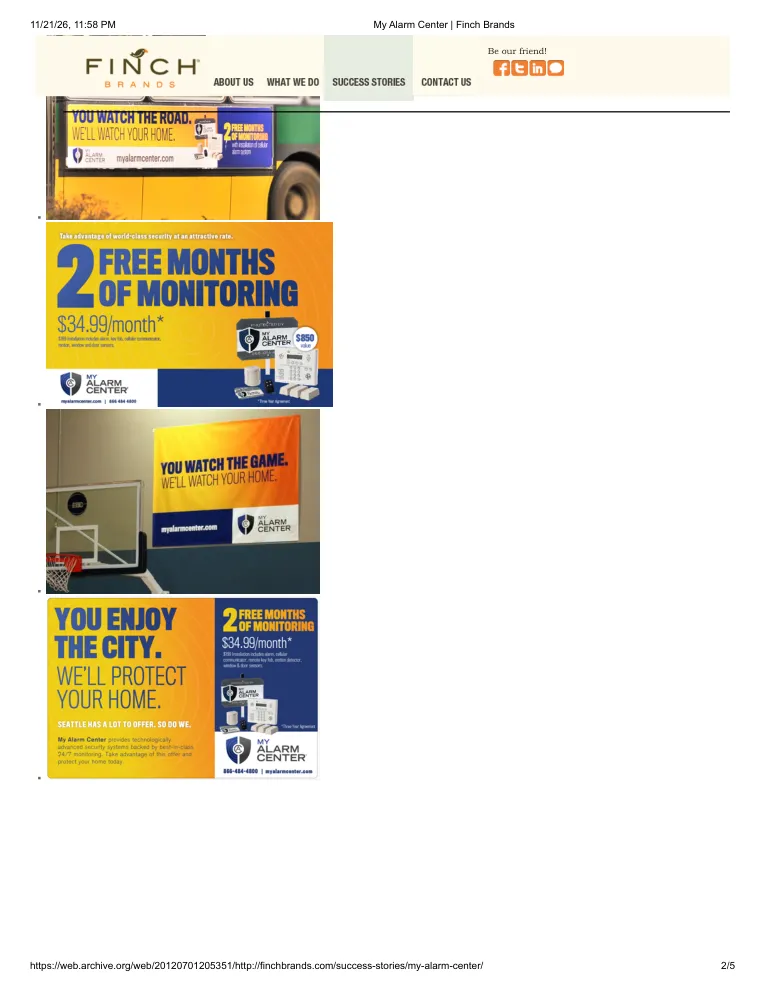

Creating “a world of protection”
Challenge
My Alarm Center is one of the premier security service providers in the country, offering a technologically advanced suite of residential and commercial security solutions. To fuel their growth trajectory, My Alarm Center and their parent company, Alarm Capital Alliance, reached out to Finch Brands in 2010 to reposition the brand and supercharge its marketing.
Solution
Beginning with the development of a new identity, tagline, and creative platform, we created a new website, full communications package, invoices, signage, welcome collateral, customer and new acquisition promotions, and an advertising campaign.
Results
A recent successful upsell marketing campaign almost tripled upgrades compared with the 3-month period prior. Altogether, the brand has tremendous momentum in a highly competitive sector.
Original published text presented in a clean reading layout. Archived page may contain historical navigation or reader comments.